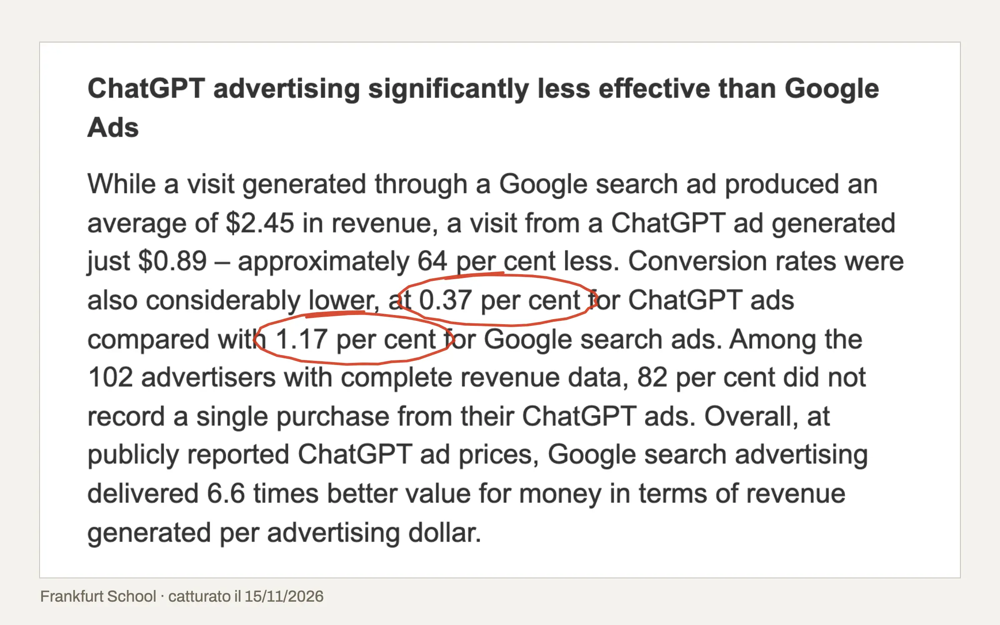

Frankfurt School e WU Vienna11/2026
Su ChatGPT una visita pagata converte un terzo di una da Google
10/10
Cosa è successo, e come lo proverei
Cosa è successo
Due ricercatori hanno misurato il rendimento degli annunci su ChatGPT sui dati reali di quasi 1.900 negozi online, confrontandolo con Google Search sugli stessi negozi. La visita portata da un annuncio ChatGPT converte un terzo e porta circa un terzo del ricavo. Sul ricavo per dollaro speso la distanza sale a 6,6 volte, con i prezzi pubblici degli annunci.
Come lo proverei in un'azienda B2B italiana
Chi valuta gli annunci su ChatGPT parte con un tetto di spesa e lo stesso metro del canale che vuole sostituire (ricavo o lead qualificati per euro, non clic). Lo studio è su negozi online: per il B2B a ciclo lungo il dato va riletto sui lead qualificati, che lo studio non misura.
Il ritaglio della fonte

Fonte e voto
frankfurt-school, 11/2026. fonte primaria, comunicato dell'università sullo studio. Voto: prova 3/3, si rifà 3/3, novità 2/2, canale 2/2.